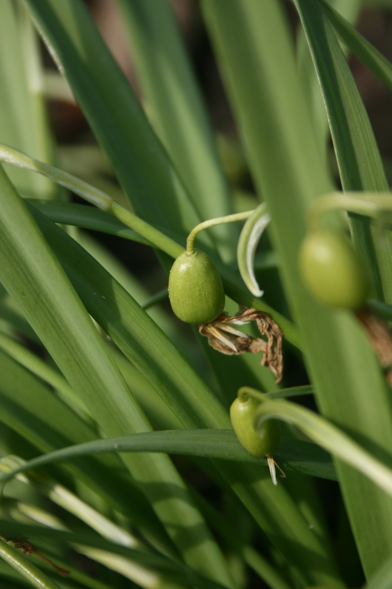
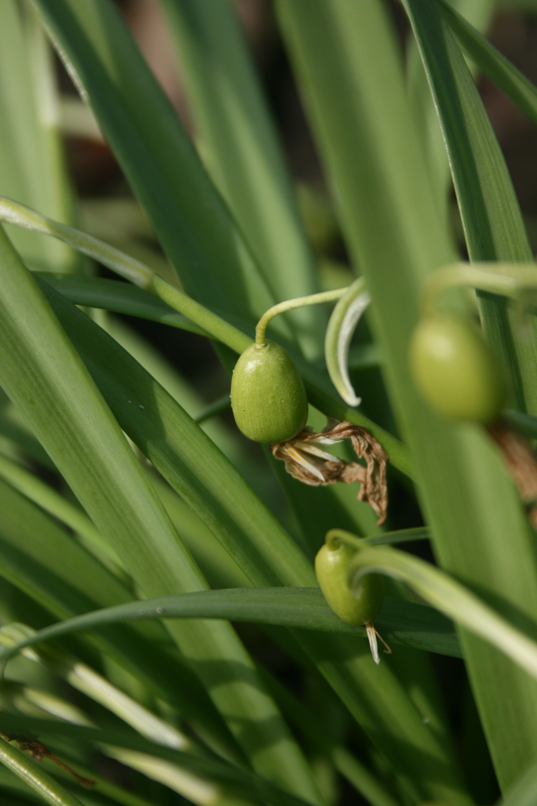

Egzotiniai vaisiai ir daržovės | MAXIMA | MAXIMA
2020.10.29 08:40

Apie mus
Akcijos
Vykstančios akcijos Teminės akcijos LeidiniaiAsortimentas
Meistro kokybė Sūrių klubas Žuvų turgus Egzotiniai vaisiai ir daržovės Užsakomieji gaminiai ReceptaiMano AČIŪ
Prisijungti Apjungti korteles Registruotis Paslaugos Pagalba Mums rūpi Išvien dėl Lietuvos SezonaiProgramėlė
Barbora
Nemokama infolinija (8-22 val.)
8 800 20050
Kas esame
Apie mus Apdovanojimai Organizacinė struktūra Pranešimai žiniasklaidai Kontaktai ir rekvizitaiKarjera
Darbo pasiūlymai Meistrų mokyklaMums rūpi
Naujienos Lietuvos Maximalistai Kitos iniciatyvos ir partneriai Išvien su gamta Socialinės atsakomybės ataskaitos Mūsų remiamos organizacijos Mes - bendruomenė Kuo vadovaujamėsParduotuvės
Parduotuvių adresai ir darbo laikas SaugumasVerslui
Kortelės juridiniams asmenims Prekybos plotų nuoma Tiekėjams Prekių ir paslaugų pirkimai Sąskaitos faktūrosIšvien dėl Lietuvos
Apie projektą Apie musAkcijos
Akcijos
Vykstančios akcijos Teminės akcijos LeidiniaiAsortimentas
Asortimentas
Meistro kokybė Sūrių klubas Žuvų turgus Egzotiniai vaisiai ir daržovės Užsakomieji gaminiai Receptai SezonaiKas esame
Kas esame
Apie mus Apdovanojimai Organizacinė struktūra Pranešimai žiniasklaidai Kontaktai ir rekvizitaiKarjera
Karjera
Darbo pasiūlymai Meistrų mokyklaMums rūpi
Mums rūpi
Naujienos Lietuvos Maximalistai Kitos iniciatyvos ir partneriai Išvien su gamta Socialinės atsakomybės ataskaitos Mūsų remiamos organizacijos Mes - bendruomenė Kuo vadovaujamėsParduotuvės
Parduotuvės
Parduotuvių adresai ir darbo laikas SaugumasVerslui
Verslui
Kortelės juridiniams asmenims Prekybos plotų nuoma Tiekėjams Prekių ir paslaugų pirkimai Sąskaitos faktūrosIšvien dėl Lietuvos
Išvien dėl Lietuvos
Apie projektą Paslaugos Pagalba Mums rūpi Išvien dėl LietuvosProgramėlė
Barbora
Nemokama infolinija (8-22 val.)
8 800 20050
Mano AČIŪ
Prisijungti Apjungti korteles Registruotis Egzotiniai vaisiai ir daržovėsGrįžti į sąrašą
Spaudžiame šviežias sultis
Vienas geriausių vitaminų ir sveikatos šaltinių – šviežiai spaustos sultys. Patiems nesinori traukti sulčiaspaudės? Atsigaivinkite šviežiai spaustomis vaisių ir daržovių sultimis parduotuvėse MAXIMA.Lietuvoje auga ne viskas, tačiau mūsų parduotuvėse rasite net ir pačių egzotiškiausių vaisių ir daržovių – šviežių ir kupinų vitaminų!
Kinkanai, kertuočiai, mangostaninės garcinijos – daugeliui šie žodžiai skamba kaip rebusas, nors iš tikrųjų tai itin gurmanų mėgstami egzotiniai vaisiai. Šiuos ir kitus tropinius vaisius pamačiusiems prekybos centre kyla begalė klausimų: kaip juos valgyti, su kuo derinti, kaip išsirinkti prinokusius, kur juos laikyti – šaldytuve ar kambario temperatūroje?
Pasaulyje gausu įvairiausių egzotinių ir tropinių vaisių, kurių svečiose šalyse nepraleidžia progos paragauti dažnas keliautojas. Tačiau nebūtina keliauti tolimosiomis kryptimis, kad galėtumėte paskanauti lietuviams dar neįprastų, o dažnai net ir negirdėtų vaisių ar daržovių – kreivabudžių, tamarindų, rambutanų ir kitų.
Sužinokite, kuo šie vaisiai ir daržovės vertingi, ruoškite naujus patiekalus ir atraskite egzotiškų skonių savo virtuvėje.
Spaudžiame šviežias sultis šiose MAXIMA parduotuvėse:
Visi miestai Vilnius Kaunas Klaipėda Šiauliai Panevėžys Alytus Druskininkai Kėdainiai Marijampolė Palanga Plungė Rokiškis Telšiai UtenaEgzotiniai vaisiai ir daržovės
ArtišokasArtišokas
Artišokas - ši daržovė pradėta auginti dar antikos laikais. Valgoma dalis – jauni neišsiskleidę artišokų žiedai, kuriems malonaus skonio ir riešutų kvapo suteikia susikaupusios aromatinės medžiagos – laikoma delikatesu. Valgoma rankomis, laužiant vieną žiedlapį po kito – gurmanai tai laiko savotišku ritualu. Laikymas Neplautus artišokus sudėkite į plastikinį maišelį ir laikykite šaldytuve. Vertingos maistinės ypatybės Dietinių skaidulų, vitaminų C, B6, K, mineralinių medžiagų: geležies, fosforo, magnio, kalio, vario ir mangano, šaltinis. Vartojimas Tradicinis patiekalas iš artišokų yra pats pumpuras, patiekiamas su padažu kaip karštasis arba šaltasis užkandis. Iš artišokų galite pasigaminti įvairių užtepėlių, pyragų, naudoti padažams, dėti į makaronų patiekalus. Jie dera su šonine, ožkų pieno sūriu, parmezanu, grybais, pomidorais, pankoliais, sviestu, grietine, majonezu, alyvuogių aliejumi, česnakais, svogūnais, citrinomis, petražolėmis, bazilikais, čiobreliais. Kelios patiekimo idėjos Virti artišokai. Artišokus virkite 25–40 minučių ant silpnos ugnies kartu su šlakeliu alyvuogių aliejaus, česnako skiltele, citrinos griežinėliu ir lauro lapu. Išviręs pumpuro viršūnės žiedlapis lengvai išsitraukia. Valgykite rankomis – nuo šerdies atskirtų vainiklapių apačią merkite į padažą, minkštimą traukite tarp dantų. Pasiekę šerdį dengiančias „šienu“ vadinamas skaidulas, jas pašalinkite, o šerdį dažykite į padažą ir valgykite. Padažui lygiomis dalimis sumaišykite majonezą ir grietinę, pagal skonį gardinkite citrinų sultimis. BazilikasBazilikas
Bazilikas vartojamas visame pasaulyje, ypač Viduržemio jūros regione. Saldymedžių ir gvazdikėlių skoniu bei aromatu išsiskiriantis prieskoninis augalas ypač dera prie pomidorų, be to, jis – pagrindinis garsiojo itališko pagardo pesto sudedamoji dalis. Raudonasis bazilikas yra aitresnio ir išraiškingesnio skonio už žaliąjį, itin mėgstamas Kaukazo virtuvėje. Laikymas Nuskintas žoleles laikykite šaldytuve. Aromatas išlieka ir užšaldžius. Vertingos maistinės ypatybės Baltymų, vitaminų A, C, E, B6, K; mineralinių medžiagų: kalcio, geležies, magnio, fosforo, kalio, cinko, vario ir mangano, šaltinis. Vartojimas Bazilikai puikiai dera su veršiena, kiauliena, triušiena, ėriena, antiena, vištiena, kepenėlėmis, žuvimis, kiautuotaisiais vėžiagyviais, bulvėmis, baklažanais, pomidorais, paprikomis, cukinijomis, salotomis, žalumynais, kiaušiniais, sūriu, pomidorų padažu. Į karštuosius patiekalus bazilikų dėkite baigdami ruošti – karštis greitai sunaikina jų aromatą, žolelė suglemba ir pajuoduoja. Kelios patiekimo idėjos Šviežių daržovių ir žalumynų salotose bazilikai paryškina kitų sudedamųjų dalių skonį, praplečia aromatų spektrą, papildo vitaminais. Gaminant sūrius, actą, aliejų, arbatas ar net desertus, gali tapti pagrindiniu akcentu. Gaivinamasis gėrimas su raudonaisiais bazilikais. Saujelę bazilikų nuplaukite, suplėšykite ir sudėkite puodo dugne. Išspauskite 1 citrinos sultis, supilkite 2–3 valgomuosius šaukštus cukraus ir 1,5 l vandens, pavirkite 3–4 minutes. Gerkite atvėsintą. FigaFiga
Figa – vienas seniausių kultūrinių augalų, kilęs iš Azijos ir paplitęs visame pasaulyje. Sunokę figų vaisiai yra panašios į kriaušę formos, saldaus pikantiško skonio, kvapūs, puikus dietinių skaidulų šaltinis. Figos puikiai dera su užkandžiais, jas galima naudoti desertams arba valgyti vienas. Laikymas Šviežias figas rekomenduojama laikyti šaldytuve. Jei vaisiai ne visai sunokę, laikykite juos kambario temperatūroje, vengdami tiesioginių saulės spindulių. Vertingos maistinės ypatybės Dietinių skaidulų šaltinis. Turi vitaminų B6, C, taip pat kalio ir kalcio. Vartojimas Figas galima valgyti šviežias arba kepti. Šviežias figas valgykite nulupę (patogiausia padalijus ketvirčiais) arba perpjovę pusiau ir minkštimą kabindami šaukšteliu. Nors figos saldžios, jų skonis gana pikantiškas. Šviežios puikiai tinka vienos kaip desertas, dera su raudonuoju vynu, vytintu kumpiu, mėlynuoju sūriu, ožkų pieno sūriu, riešutais, karamele, šokoladu, medumi, citrinomis ir kt. Kelios patiekimo idėjos Figos puikiai tinka kaip užkandis prie sunkesnių, kaloringesnių patiekalų, sūrio, vytinto kumpio, riešutų. Avižų ar kitų grūdų košei pagardinti. Salotoms naudokite ketvirčiais supjaustytas figas, pankolius, gražgarsčių lapus ir parmezaną. Užkandžiui ar desertui tiks ožkų pieno sūriu ir kapotais migdolų riešutais įdarytos šviežios figos. KinkanasKinkanas
Kinkanai kilę iš Pietryčių Kinijos ir Indokinijos. Plona jų odelė maloniai saldžiai kvepia ir yra valgoma – tai retas atvejis tarp citrusinių vaisių. Kiek rūgštokos sultys ir pikantiškas odelės saldumas sudaro labai aromatingą ir gaivinantį skonio derinį. Kinkanai – geras dietinių skaidulų ir vitamino C šaltinis. Laikymas Laikykite šaldytuve plastikiniame maišelyje. Vertingos maistinės ypatybės Dietinių skaidulų, vitamino C šaltinis. Vartojimas Šiuos vaisius galima valgyti labai įvairiai: šviežius ir naudoti karštiesiems patiekalams, kepiniams, desertams gaminti. Puikiai dera su vištiena, antiena, obuoliais, ananasais, spanguolėmis, kardamonais, romu, degtine, džinu. Kinkanai gali būti valgomi su odele. Jei nemėgstate saldžiai aitraus skonio – nulupkite. Kelios patiekimo idėjos Įdėkite griežinėliais supjaustytų kinkanų į vaisių arba žalių daržovių salotas, ypač tinka su kartoko skonio salotomis. Kinkanų galima dėti į žuvų ir paukštienos patiekalus, mėsos kepsnius. Jie suteikia patiekalui ir skonį, ir spalvą. Šviežiais kinkanais galima paskaninti duoną, sausainius, pyragus, tortus. Kinkanai papuoš patiekalus iš žuvies, mėsos, šaltus užkandžius. Šaldytus kinkanus naudokite gaivinančių arba alkoholinių gėrimų papuošimui arba vietoj ledo kubelių. LitisLitis
Ličių gimtinė – Azija. Iš pirmo žvilgsnio jie panašūs į braškes, apgaubtas šiurkščia ir kieta krokodilo oda, todėl Pietuose vadinami aligatorių braškėmis. Gardus ličio minkštimas gaubia didelę nevalgomą sėklą, o saldus skonis primena braškes, arbūzus ir vynuoges. Turi vitamino C. Laikymas Šviežius ličius suvyniokite į popierinį rankšluostį ir plastiko maišelyje su skylutėmis laikykite šaldytuve. Vertingos maistinės ypatybės Vitamino C ir vario šaltinis. Vartojimas Ličių vaisius nulupkite, nes valgomas tik minkštimas. Dažniausiai ličiai valgomi švieži, tik prieš vartojant juos patartina atšaldyti. Šiuos vaisius galima naudoti desertų, įvairių gėrimų, mėsos patiekalų, padažų gaminimui. Kelios patiekimo idėjos Vaisių salotose ir desertuose ličiai dera su ananasais, kiviais, bananais, apelsinais ir kitais Pietų kraštų vaisiais. Egzotiškam desertui arbūzo gabaliukus ir ličius patiekite su vaniliniais ledais ir pabarstykite smulkintais imbiero cukatais. Karamelizuoti ličiai bus puikus pagardas ledams. Ličių galima dėti į jogurtus, žele, nekeptus vaisinius tortus. Vištienos, kalakutienos patiekalams ličiai suteiks saldaus pikantiško skonio. Ličius galima naudoti gaminant įvairius padažus, skirtus mėsos patiekalams ir desertams. MairūnasMairūnas
Kvapusis mairūnas – vienas seniausiai vartojamų prieskoninių augalų. Puikiai dera su kitais prieskoniais, dažnai naudojamas jų mišiniams. Labai tinka mėsos patiekalams, taip pat puikiai pagardina daržovių, žuvų, kiaušinių valgius. Skonis švelnus, nors ir šiek tiek kartokas. Laikymas Laikykite šaldytuve, susuktus į drėgną popierinį rankšluostį ir sudėtus į sandarų plastiko maišelį. Šviežius lapelius galite užšaldyti. Vertingos maistinės ypatybės Dietinių skaidulų, vitaminų A, C, K, B6, mineralinių medžiagų: kalcio, geležies, vario, magnio, mangano, fosforo, kalio, šaltinis. Vartojimas Dėl švelnaus skonio ir viliojančio aromato mairūnus galima derinti su įvairiausiais maisto produktais. Mairūnai ypač dera su bazilikais, čiobreliais, petražolėmis, laurų lapais, taip pat su paukštiena, žuvimis, mėsos patiekalais, morkomis, kukurūzais, salotomis, sriubomis, varške ir kt. Šviežių mairūnų per ilgai nekaitinkite, nes išnyks jų skonis ir aromatas. Kelios patiekimo idėjos Gardinkite mėsos patiekalus (ruošdami virtinius, balandėlius, maltinukus). Daržovių patiekaluose mairūnai tinka su sunkiau virškinamomis daržovėmis – pupomis, kopūstais ar keptomis bulvėmis. Mairūnai pabrėš pomidorų padažų, sriubų ir troškinių skonį. Naudokite raugdami agurkus ar pomidorus. Aromatingą salotų ar duonos pagardą pagaminsite į alyvuogių aliejų įbėrę ar į sviestą įmaišę smulkintų mairūnų lapelių. PapajaPapaja
Papajos - iš Centrinės Amerikos kilusio vaisiaus odelė gaubia mėsingą, geltoną arba oranžinės spalvos minkštimą su keke juodų sėklų viduryje. Prinokusių papajų skonis primena melionus, labai saldžios, nepasižymi specifiniu aromatu ir neretai apibūdinamos kaip truputį prėskos, nes jose nėra vaisių rūgšties. Laikymas Neprinokusias papajas galite laikyti kambario temperatūroje, prinokusias – šaldytuve. Vertingos maistinės ypatybės Vitaminų A ir C, dietinių skaidulų, kalio šaltinis. VartojimasPrisirpusios papajos valgomos šviežios, o neprinokę vaisiai gali būti naudojami kaip daržovės įvairiems karštiems patiekalams ir salotoms. Nulupkite odelę, išilgai perpjaukite vaisių į dvi lygias dalis. Išimkite sėkliukes. Vaisių pjaustykite išilgai arba nedideliais kubeliais. Kelios patiekimo idėjos Šviežios papajos valgomos šviežios, pagardintos keliais šlakeliais citrinų arba žaliųjų citrinų sulčių ir cukrumi. Vaisių salotos su bananų padažu. Salotų dubenyje sumaišykite supjaustytus vaisius: papajas, melioną, ananasą, žaliąsias vynuoges, braškes. Padažui maišytuve sutrinkite 2 bananus, stiklinę grietinės, 1,5 arb.š. citrinos sulčių ir 2-3 š. rudojo cukraus. Prieš vartojimą padažą 2 val. palaikykite šaldytuve. Pikantiškos salotos kepsnių sezonui. Sumaišykite 1 kubeliais pjaustytą papają, 2 mangus, 1 raudonąją papriką, ½ raudonojo svogūno, 3 š. kapotų kalendros lapelių, po 3 š. žaliųjų citrinų ir apelsinų sulčių, 2 š. tamsaus romo, 3 š. kokoso drožlių. Pagal skonį pagardinkite druska. Prieš vartojimą atšaldykite, patiekite su kepsninėje kepta mėsa. Mangostaninė garcinija
Mangostaninė garcinija
Mangostaninė garcinija - tai vienas labiausiai giriamų atogrąžų vaisių, dažnai tituluojamas vaisių karaliumi. Sniego baltumo minkštimo skiltelės yra subtilaus, saldžiarūgščio, itin egzotiško ir gaivaus skonio. Mangostaninės garcinijos paprastai valgomos šviežios kaip desertas. Laikymas Laikykite šaldytuve. Vertingos maistinės ypatybės Vitamino C, dietinių skaidulų, mineralinių medžiagų: kalio, mangano ir magnio, šaltinis. Vartojimas Norėdami vaisių nulupti paimkite jį taip, kad kotelio įdubimas būtų nukreiptas į apačią ir aštriu peiliu aplink vaisių per vidurį perpjaukite žievelę. Viršutinę žievelės dalį pakelkite – minkštimo skiltys liks spalvingame „puodelyje“ – žievelės apatinėje dalyje. Minkštimą ištraukite šakute. Negalima palikti žievelės likučių – ji karti ir suvalgyta sugadina skonį. Kelios patiekimo idėjos Valgykite vienas arba pagardinkite jomis vaisių salotas. Skiltelės – puikus priedas prie šampano ar putojančio vyno. Mangostaninės garcinijos labai skanios pagardintos braškių ar aviečių padažu. Norėdami paruošti egzotiškas šviežių vaisių salotas, mangostaninių garcinijų skilteles sumaišykite su ličiais, avietėmis ir mėtų lapeliais. Patiekite pagardintas natūraliu jogurtu. Gaiviam desertui mangostaninių garcinijų skilteles sumaišykite su pjaustytomis slyvomis ir pabarstykite kokoso drožlėmis. Patiekite su vaniliniu jogurtu. SmidrasSmidras
Smidrai , Lietuvoje neretai vadinami šparagais, – puikaus skonio daržovė, verta atsidurti ant prabangiausių pietų stalo. Legendomis apipintam augalui priskiriamos afrodiziakinės ypatybės, galia sugrąžinti jaunystę. Maistingų medžiagų turintys smidrai garsėja kaip nekaloringos daržovės. Laikymas Neplautus stiebų galus susukite į drėgną popierinį rankšluostį, sudėkite į maišelį ir laikykite šaldytuve. Vertingos maistinės ypatybės Dietinių skaidulų, baltymų, vitaminų A, C, E, K, B6, mineralinių medžiagų: geležies, fosforo, kalio, vario, kalcio, magnio, cinko, seleno ir mangano, šaltinis. Vartojimas Smidrų ruošimas neturi griežtų taisyklių: juos galima virti, troškinti, kepti, patiekti kaip užkandį ar garnyrą. Nepersistenkite su prieskoniais – pasimėgaukite tikruoju, su niekuo nesulyginamu, daržovės skoniu. Smidrai puikiai dera su skrebučiais, krabais, krienais, citrinomis, grybais, garstyčiomis, muskatais, svogūnais, apelsinais, parmezanu, petražolėmis, rozmarinais ir kt. Kelios patiekimo idėjos Užkandžiui smidrus apvyniokite rūkytos šoninės juostelėmis ir apkepkite orkaitėje apie 20 min., kol iškeps šoninė. Su paukštiena, jautiena ar krevetėmis puikiai tiks truputį apkepinti smidrai. Prancūziškai vakarienei virtus smidrus patiekite su ištirpintu sviestu arba alyvuogių aliejumi, parmezanu ar majonezu. Salotoms idealiai tiks termiškai neapdoroti, griežinėliais supjaustyti smidrai. Užkandžiui tiks termiškai neapdoroti smidrų stiebai su jūsų mėgstamu padažu. ŠalavijasŠalavijas
Šalavijas populiarus tradicinėje Viduržemio jūros virtuvėje ir nuo seno vertinamas dėl kulinarinių ir medicininių ypatybių. Pavadinimas kildinamas iš lotyniško žodžio salvere – „gerai jaustis, būti geros sveikatos“. Stiprus savitas skonis labai dera su riebiais patiekalais. Jais gardinama paukštiena, veršiena, triušiena, žuvų ir makaronų patiekalai, padažai. Laikymas Šalavijus laikykite šaldytuve suvyniotus į truputį sudrėkintą popierinį rankšluostį. Vertingos maistinės ypatybės Dietinių skaidulų, vitaminų A, B6, C, E, K, mineralinių medžiagų: kalcio, geležies, magnio ir mangano, šaltinis. Vartojimas Šalavijai puikiai dera su riebia mėsa, kepenimis, paukštiena, žuvimis, tunais, baklažanais, pomidorais, pupelėmis, žirniais, virtinukais, obuoliais, sūriu. Šalavijai gali nustelbti patiekalo skonį, todėl būkite atsargūs su jais eksperimentuodami. Gamindami karštuosius patiekalus, šalavijų dėkite baigdami gaminti, taip geriausiai atsiskleis jų skonis ir kvapas. Kelios patiekimo idėjos Kepdami vištą arba žuvis, suvyniotas į kepimo popierių, įdėkite į vidų šviežių šalavijų lapų, kad maistas prisigertų šių nuostabių žolelių kvapo. Gaivias salotas patieksite sumaišę šalavijų lapus, saldžiąsias paprikas, agurkus ir saldžiuosius svogūnus su natūraliu jogurtu. Pasigaminkite aromatingo aliejaus, kurį galėsite naudoti troškindami ar salotoms. Šviežius šalavijų lapelius užpilkite alyvuogių aliejumi ir laikykite šaldytuve iki 3 savaičių. ČiobrelisČiobrelis
Čiobrelis yra viena iš plačiausiai kulinarijoje naudojamų žolelių. Yra daugiau nei 100 jų rūšių, labiausiai paplitusi - daržinis čiobrelis, jo aitrus aromatas primena mėtą, šiek tiek citriną. Kita gerai žinoma rūšis - citrininis čiobrelis, pasižymintis stipresniu citrinos aromatu. Vertingos maistinės ypatybės Vitaminų A, C ir B6, folio rūgšties, kalio, cinko, kalcio, geležies, magnio, vario ir mangano šaltinis. Vartojimas Čiobrelis puikiai tiks salotoms, sriuboms, padažams, daržovių ir mėsos patiekalams, taip pat ir desertams gardinti. Jis dera su kiauliena, jautiena, elniena, vištiena, žuvims, morkomis, bulvėmis, pomidorais, lęšiais, svogūnais, žirniais, ožkų sūriu, figomis. Kelios patiekimo idėjos Druska įtrintas keptas viščiukas su citrinomis ir čiobreliais. 1,5 kg viščiuko odelę įtrinkite mišiniu iš 3 v. š. rupios druskos, 1,5 arb. š. grūstų juodųjų pipirų ir 2 v. š. kapotų čiobrelių lapelių (stiebelių neišmeskite). Neuždengtą viščiuką palikite šaldytuve 8-12 val. Išėmę į viščiuko vidų prikimškite ketvirčiais pjaustytą citriną, 4 česnakų skilteles, čiobrelių stiebelius. Išlydykite 3 v. š. sviesto, aptepkite juo viščiuką ir kepkite 200 °C orkaitėje. Kas 20 min. aplaistykite likusiu sviestu ir kepant išsiskyrusiomis sultimis. Upėtakio marinatas. Sumaišykite 1 v. š. alyvuogių aliejaus, 1 v. š. čiobrelių lapelių, 2 smulkintas česnakų skilteles, ½ arb. š. grūstų juodųjų pipirų, ¼ arb. š. uoginių paprikų, 1 žaliosios citrinos sultis. Šiuo mišiniu gerai padenkite žuvį ir palaikykite 2 val. šaldytuve. Kepkite orkaitėje arba keptuvėje. CitrinžolėCitrinžolė
Citrinžolė yra vienas populiariausių prieskonių pietryčių Azijos šalių virtuvėse. Ji skleidžia intriguojantį citrinų aromatą ir pasižymi lengvu, gaivinančiu, imbierą primenančiu skoniu. Tai vienas pagrindinių ingredientų kario prieskonių mišiniuose, taip pat naudojama mėsos, daržovių ir žuvies patiekalams, marinatams pagardinti. Vertingos maistinės ypatybės Geležies, kalio, mangano, folio rūgšties, magnio, cinko ir vario šaltinis. Vartojimas Išorinius lapus reikia nulupti ir maistui naudoti tik apatinę vidinio stiebo dalį, maždaug iki tos vietos, kur lapai pradeda šakotis. Likusią augalo dalį išmeskite arba panaudokite sultiniui. Į patiekalus citrinžoles galite berti supjaustytas stambiau ir prieš patiekdami išimti. Prieš berdami į patiekalą stambiai pjaustytas citrinžoles, gabaliukus šiek tiek sutrinkite, kad išsiskirtų aromatas. Arba pjaustykite citrinžoles smulkiai ir leiskite patiekale pavirti bent 10-15 min., kad suminkštėtų. Kelios patiekimo idėjos Vištiena su kokosų pienu ir citrinžolėmis. Į puodą įpilkite 800 ml kokosų pieno, 3 v. š. žuvų padažo, dėkite 1,5 v. š. smulkintų imbierų, 2 smulkiai pjaustytus citrinžolių stiebelius, 3 arb. š. žaliųjų citrinų žievelių, 1 pjaustytą aitriąją papriką, 2 arb. š. rudojo cukraus. Ant silpnos ugnies užvirkite ir neuždengę virkite 5 min. Suberkite 500 g gabaliukais pjaustytos vištienos ir uždengę virkite apie 15 min., kol vištiena išvirs. Išjunkite, pagardinkite 2 v. š. žaliųjų citrinų sulčių ir sauja kapotų bazilikų bei kalendrų lapelių. Patiekite su ryžiais. KaštainiaiKaštainiai
Kaštainiai - tai blizgūs rudi riešutai storu kevalu. Išvirtų kaštainių baltas kreminis minkštimas primena keptas bulves, tačiau skiriasi ypatingu saldžiu ir riešutiniu aromatu. Ilgą laiką jie buvo vienas iš pagrindinių maisto produktų Europoje. Kaštainius galima skrudinti, naudoti sriuboms ir daržovių patiekalams, įdarams, desertams ruošti. Vertingos maistinės ypatybės Vitamino C ir vario šaltinis. Vartojimas Kaštainiai puikiai dera su įvairia mėsa, šonine, daržovėmis, grybais, obuoliais, citrinomis, apelsinais, sviestu, brendžiu, konjaku, romu, grietinėle, šokoladu, cinamonu, gvazdikėliais, imbierais. Išlukštenti bus lengviau, jei prieš gamindami kevale aštriu peiliu padarysite „X“ formos įpjovą. Lupkite karštus - jau išvirusius arba pavirtus tik kelias minutes, jei naudosite kitiems patiekalams ruošti. Kelios patiekimo idėjos Skrudinti kaštainiai yra klasikinis patiekimo būdas. Riešutus įpjautais kevalais skrudinkite 200-220°C orkaitėje ~ 30 min. Briuseliniai kopūstai ir kaštainiai yra klasikinis derinys ir gali būti patiekiami kaip garnyras ar lengvas patiekalas. Keptuvėje pakepinkite šoninę, suberkite smulkintą svogūną ir dar pakepinkite. Sudėkite 2 min. apvirtus briuselinius kopūstus, skrudintus kaštainius ir įpilkite šiek tiek sultinio. Troškinkite, kol briuseliniai kopūstai taps norimo minkštumo. Jūsų mėgstamiems vištienos ar daržovių patiekalams kaštainiai suteiks saldumo. Jie ypač tinka riebaluose apkeptoms daržovėms ir vištienos troškiniams ruošti. MelisaMelisa
Melisos yra mėtų šeimos augalai, kilę iš pietinės Europos dalies bei Viduržemio jūros regiono. Jos pasižymi gaiviu citrusinių vaisių aromatu, primenančiu mėtas ir citrinas. Melisa puikiai papildo žuvų, vištienos, vaisių ir daržovių patiekalus, salotas ir gaiviuosius gėrimus. Vertingos maistinės ypatybės Vitaminų A ir C, kalcio, kalio, geležies, magnio ir mangano šaltinis. Vartojimas Melisomis gardinami kiaušinių, mėsos ir žuvies patiekalai, sriubos, troškiniai, padažai, salotos. Ji naudojama įdaruose, marinatuose. Melisos dera su bazilikais, mėtomis, rozmarinais, petražolėmis, krapais, čiobreliais, daržiniais builiais bei laurų lapais. Į karštus patiekalus berkite baigdami gaminti. Kelios patiekimo idėjos Įdarykite viščiuką prieskoninių žolelių bei smulkintų melisų mišiniu arba smulkiai sukapotais melisų lapeliais įtrinkite viščiuko odą. Puikų salotų užpilą pagaminsite iš puodelio stambiai pjaustytų melisų lapelių, ½ puodelio raudonojo vyno acto, 1 puodelio alyvuogių aliejaus, druskos ir juodųjų pipirų. Visus produktus sumaišykite ir sandariai uždarę palaikykite 1 val. šaldytuve, kad skoniai susimaišytų. Žuvų ar paukštienos marinatas. Į maisto smulkintuvą suberkite 2 puodelius melisų lapelių, 1,5 v. š. smulkintų česnakų, ¼ arb. š. druskos, ¼ arb. š. pipirų, ¼ puodelio citrinų sulčių, 1 v. š. rudojo cukraus arba medaus, ¼ puodelio alyvuogių aliejaus. Sutrinkite, jei reikia dar, įpilkite alyvuogių aliejaus. Paragaukite, ar nieko netrūksta. Šį marinatą galite naudoti ir kaip salotų užpilą. Juodkotė ugniabudėJuodkotė ugniabudė
Juodkotė ugniabudė - Azijos šalių virtuvėse itin populiarūs grybai (dar kartais vadinami enoki grybais) yra švelnaus skonio ir traškios tekstūros. Dėl jų egzotinės išvaizdos, juodkotėmis ugniabudėmis dažnai puošiamos salotos, sumuštiniai, juos galite naudoti virdami sriubas arba ruošdami daržovių ir mėsos patiekalus. Vertingos maistinės ypatybės Dietinių skaidulų, geležies, vario, folio rūgšties, fosforo ir kalio šaltinis. Vartojimas Juodkotės ugniabudės vartojamos ruošiant azijietiškas sriubas, šviežias salotas ar lakštinių patiekalus, garnyrus prie mėsos patiekalų. Naudokite su makaronais, sojomis, imbierais, citrinžolėmis, šviežiomis žolelėmis, jūros gėrybėmis ar paukštiena. Kelios patiekimo idėjos Omletas su juodkotėmis ugniabudėmis ir laiškiniais česnakais ar svogūnų laiškais. Grybus perpjaukite perpus, pirštais išskirstykite ir sumaišykite su smulkintais žalumynais. Užpilkite kiaušinio plakiniu, pagardinkite druska, pipirais ir kepkite. Jeigu norite pusryčius papildyti azijietišku skoniu, paruoškite omleto padažą iš trijų dalių sojų padažo, vienos dalies sezamų aliejaus ir šlakelio mėgstamo acto. Tikrai gardus derinys. Į šoninę įvyniotos juodkotės ugniabudės tiks užkandžiui. Kuokštelį grybų dėkite ant šoninės juostelės, apibarstykite smulkintais laiškiniais svogūnais ir juodaisiais pipirais, standžiai suvyniokite ir sutvirtinkite dantų krapštuku. Kepkite 220 °C orkaitėje, kol šoninė apskrus ir taps traški. Nusausinkite ryšulėlius ant popierinio rankšluosčio, ištraukite dantų krapštuką ir patiekite. KreivabudėsKreivabudės
Kreivabudės - tvirtos, mėsingos tekstūros ir malonaus skonio grybai yra mėgstami Prancūzijos, Viduržemio jūros ir Azijos virtuvėse. Šviežias grybas neturi stipraus kvapo, tačiau iškeptas įgauna nepakartojamą subtilų aromatą ir skonį. Apkepintas kreivabudes galima naudoti beveik visuose patiekalų su grybais receptuose. Vertingos maistinės ypatybės Dietinių skaidulų, baltymų, vitamino B6, folio rūgšties, geležies, magnio, cinko, fosforo, kalio, vario ir mangano šaltinis. Vartojimas Kreivabudes galima troškinti, kepti ant atviros ugnies, grotelių arba pakepinti keptuvėje ir dėti į sriubas, troškinius, padažus, makaronų patiekalus, daržovių patiekalus, patiekalus iš mėsos, jūros gėrybių. Jeigu grybų nesmulkinate, leiskite jiems pakepti arba pasitroškinti ilgesnį laiką, kol jie įgaus malonią rusvą spalvą. Kelios patiekimo idėjos Paprasčiausias būdas mėgautis kreivabudėmis – keptuvėje alyvuogių aliejuje pakepinkite smulkintą česnaką ir sudėkite išilgai 5 mm storio riekelėmis supjaustytus grybus. Kepkite 1–2 min. iš kiekvienos pusės, kol įgaus rusvai auksinę spalvą. Apibarstykite druska ir juodaisiais pipirais. Galite valgyti vienus, su padažu Teriyaki arba užsidėję ant duonos su šlakeliu alyvuogių aliejaus ir citrinos sulčių. Makaronai su kreivabudėmis ir šonine. Kol verda makaronai, keptuvėje apkepinkite grybų griežinėlius, paskui šoninę. Makaronams išvirus, viską sumaišykite, pagardinkite pipirais, galite pašlakstyti alyvuogių aliejumi. Prieš patiekdami apibarstykite tarkuotu parmezano sūriu. TamarindaiTamarindai
Iš Afrikos kilusių tamarindų ankščių viduje rasite saldžiarūgščio skonio minkštimą, kuris kulinarijos ir konditerijos patiekaluose naudojamas kaip rūgšties suteikianti medžiaga – panašiai kaip citrinos. Tamarindas yra vienas Worcesterio padažo ingredientų ir populiarus mėsos marinatuose, nes suminkština mėsą. Vertingos maistinės ypatybės Vitamino B1 šaltinis. Vartojimas Tamarindas naudojamas įvairiems marinatams, padažams, kariams, daržovių ir žuvies patiekalams gardinti. Tai populiarus gaivinančių gėrimų ingredientas, taip pat džemų, sirupų, saldainių, šerbetų ir kitų saldžių patiekalų ingredientas. Paruošimas vartoti. Minkštimo masę apipilkite šiltu vandeniu, kad apsemtų ir palaikykite 5–15 min., kad suminkštėtų. Suminkštėjusią masę trinkite pirštais, kad minkštimas ištirptų, sėklas ir skaidulas atskirkite. Gautą tyrę naudokite kaip nurodyta receptuose. Kelios patiekimo idėjos Žuvies troškinys. Uždengtoje keptuvėje įkaitintame aliejuje pakepinkite 1 arb. š. garstyčių grūdelių, kol garstyčios baigs sproginėti. Dėkite smulkintą skiltelę česnako, pakepinkite ir sudėkite 3-4 smulkintus konservuotus pomidorus, po ½ arb. š. aitriųjų paprikų ir ciberžolių. Kai užvirs, įberkite 1 v. š. tamarindų tyrės ir 400 g gabaliukais pjaustytos mėgstamos žuvies filė. Troškinkite 15-20 min., kol žuvis bus išvirusi. Patiekite su ryžiais. Tamarindų vanduo yra Meksikoje populiarus gaivinamasis gėrimas – norint jį paruošti, tereikia tamarindų tyrę sumaišyti su verdančiu vandeniu ir cukrumi, atšaldyti ir patiekti su ledukais.- SEGEBUTĖS UŽRAŠAI: Pitaja arba "Drakono vaisius"
- Sodo gėrybės - Sujunk 3 vaisius
- vaisius - Vikižodynas - Wiktionary
- Daržovės ir vaisiai - BARBORA
- Džiovinti vaisiai | Džiovintos uogos | Riešutai Jums
- Drakono vaisius arba Kertuotis – Tailando vaisius ...
- Egzotiniai vaisiai ir daržovės | MAXIMA | MAXIMA
- Durianas – Tailando vaisių karalius, smirdantis vaisius ...
- VAISIAUS ŽŪTIS
- vaisiai - išsamiai DELFI.lt
- SEGEBUTĖS UŽRAŠAI: Pitaja arba "Drakono vaisius"
„Misija – švari vasara“ skaičiuoja darbo vaisius . www.alkas.lt 2020 09 24 11:04 „Misija – švari vasara“ skaičiuoja rezultatus | lrv.lt nuotr. Vasaros pradžioje Valstybinė saugomų teritorijų tarnyba prisijungė prie pakuočių tvarkymo sumanymo „Misija – švari vasara“. Kadangi buvo pastebėta, jog paskelbus karantiną ...
- Sodo gėrybės - Sujunk 3 vaisius
Paspaudus vaisius turi būti labai minkštas, o žievė itin lengvai luptis. Jei sukate galvą, ką pagaminti iš avokado. Štai jums kelios idėjos. Vištienos salotos su mangais ir avokadais. Itin ...
- vaisius - Vikižodynas - Wiktionary
Geriausia apsaugoti džiovintus vaisius nuo tiesioginių saulės spindulių ir laikyti juos tamsioje vietoje. Jei šaldytuve nėra pakankamai vietos džiovintiems vaisiams laikyti, galite juos įdėti į viršutinę virtuvės stalčių lentyną, kur dažnai nežiūrite. Atkreipkite dėmesį, kad kambaryje neturėtų būti didelė drėgmė.
- Daržovės ir vaisiai - BARBORA
Durianas – Tailando vaisius, tajų kalba vadinamas Tu-Rian.Tai didžiulis vaisius, pasižymintis specifiniu kvapu, todėl tikrai pastebėsite ir užuosite durianus pardavinėjamus ne tik Bankoko gatvėse ar turguose, bet ir praktiškai visur Tailande.
- Džiovinti vaisiai | Džiovintos uogos | Riešutai Jums
Saldžiarūgščius vaisius saugojo piktos ir nuodingos širšės. Žiemos pradžia Lapkritis - rugsėjo anūkas, o spalio - sūnus. Jis dar ne žiema. Tai paskutinis rudens mėnuo. Piktų šalnų ir žvarbumo pradžia. Nematoma šalčio giltinė nuvirina pievas, laukus, paežeres. Nupurto spalio auksą beržynuose, užgesina raudonų klevų ...
- Drakono vaisius arba Kertuotis – Tailando vaisius ...
Deja, visas bergamotės gėris yra odelėje, pats vaisius yra rūgštus ir maistui nenaudojamas. Nedideli bergamočių medeliai dyglių auga Italijoje, Bergamo regione, žydi balandį smulkiais baltais ir salsvai kvepiančiais žiedais. Vaisiai panašūs į citrinas ir sveria apie 200 g. Jos prinoksta ir skinamos žiemą bei ankstyvą pavasarį ...
- Egzotiniai vaisiai ir daržovės | MAXIMA | MAXIMA
Kertuotis, geriau žinomas kaip drakono vaisius, tajų kalba vadinamas Gao Mung Gorn, yra vienas iš Tailando vaisių, kurių tiesiog būtina paragauti keliaujant į Tailandą. Drakono vaisius yra iš tikrųjų išskirtinai atrodantis vaisius ir savo pavadinimą yra gavęs būtent dėl išskirtinės išvaizdos.
- Durianas – Tailando vaisių karalius, smirdantis vaisius ...
Blenderyje sumaltas drakono vaisius tapo gličia tyre, kuri nepasižymėjo skoniu, bet suputojo ir priminė šampūną su juodais krisleliais. Teko tą tyrę stipriai skiesti ananasų ir apelsinų sultimis, kol skonis tapo patrauklus ir nesijautė glitumo, tačiau ir pitajos skonio visai nesijautė. Nepatariu pitajos naudoti gėrimams.
- VAISIAUS ŽŪTIS
Maisto ir kitų kasdienių prekių parduotuvė internete. Informuojame, kad šioje svetainėje yra naudojami slapukai (angl. cookies).
- vaisiai - išsamiai DELFI.lt
Džiovinti vaisiai ir uogos ne tik sveikas ir maistingas užkandis praalkus, bet ir puikus įvairių maisto patiekalų pagardas, kurį įsigysite už puikią kainą! Įsigykite jau pamėgtų džiovintų vaisių ir uogų bei atraskite naujus skonius.
„Misija – švari vasara“ skaičiuoja darbo vaisius . www.alkas.lt 2020 09 24 11:04 „Misija – švari vasara“ skaičiuoja rezultatus | lrv.lt nuotr. Vasaros pradžioje Valstybinė saugomų teritorijų tarnyba prisijungė prie pakuočių tvarkymo sumanymo „Misija – švari vasara“. Kadangi buvo pastebėta, jog paskelbus karantiną ...
Paspaudus vaisius turi būti labai minkštas, o žievė itin lengvai luptis. Jei sukate galvą, ką pagaminti iš avokado. Štai jums kelios idėjos. Vištienos salotos su mangais ir avokadais. Itin ...
Geriausia apsaugoti džiovintus vaisius nuo tiesioginių saulės spindulių ir laikyti juos tamsioje vietoje. Jei šaldytuve nėra pakankamai vietos džiovintiems vaisiams laikyti, galite juos įdėti į viršutinę virtuvės stalčių lentyną, kur dažnai nežiūrite. Atkreipkite dėmesį, kad kambaryje neturėtų būti didelė drėgmė.
Durianas – Tailando vaisius, tajų kalba vadinamas Tu-Rian.Tai didžiulis vaisius, pasižymintis specifiniu kvapu, todėl tikrai pastebėsite ir užuosite durianus pardavinėjamus ne tik Bankoko gatvėse ar turguose, bet ir praktiškai visur Tailande.
Saldžiarūgščius vaisius saugojo piktos ir nuodingos širšės. Žiemos pradžia Lapkritis - rugsėjo anūkas, o spalio - sūnus. Jis dar ne žiema. Tai paskutinis rudens mėnuo. Piktų šalnų ir žvarbumo pradžia. Nematoma šalčio giltinė nuvirina pievas, laukus, paežeres. Nupurto spalio auksą beržynuose, užgesina raudonų klevų ...
Deja, visas bergamotės gėris yra odelėje, pats vaisius yra rūgštus ir maistui nenaudojamas. Nedideli bergamočių medeliai dyglių auga Italijoje, Bergamo regione, žydi balandį smulkiais baltais ir salsvai kvepiančiais žiedais. Vaisiai panašūs į citrinas ir sveria apie 200 g. Jos prinoksta ir skinamos žiemą bei ankstyvą pavasarį ...
Kertuotis, geriau žinomas kaip drakono vaisius, tajų kalba vadinamas Gao Mung Gorn, yra vienas iš Tailando vaisių, kurių tiesiog būtina paragauti keliaujant į Tailandą. Drakono vaisius yra iš tikrųjų išskirtinai atrodantis vaisius ir savo pavadinimą yra gavęs būtent dėl išskirtinės išvaizdos.
Blenderyje sumaltas drakono vaisius tapo gličia tyre, kuri nepasižymėjo skoniu, bet suputojo ir priminė šampūną su juodais krisleliais. Teko tą tyrę stipriai skiesti ananasų ir apelsinų sultimis, kol skonis tapo patrauklus ir nesijautė glitumo, tačiau ir pitajos skonio visai nesijautė. Nepatariu pitajos naudoti gėrimams.
Maisto ir kitų kasdienių prekių parduotuvė internete. Informuojame, kad šioje svetainėje yra naudojami slapukai (angl. cookies).
Džiovinti vaisiai ir uogos ne tik sveikas ir maistingas užkandis praalkus, bet ir puikus įvairių maisto patiekalų pagardas, kurį įsigysite už puikią kainą! Įsigykite jau pamėgtų džiovintų vaisių ir uogų bei atraskite naujus skonius.
 
